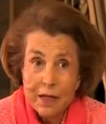

Bettencourt was born in Paris, the only child of Louise Madeleine Berthe (née
Doncieux) and Eugène Schueller, the founder of L'Oréal, one of the world's
largest cosmetics and beauty companies.
Her mother died when Liliane was 5 years
old, and she formed a close bond with her father, who later married Liliane's
British governess. At the age of 15 she joined her father's company as an
apprentice, mixing cosmetics and labelling bottles of shampoo.
In 1950 she married French politician André Bettencourt, who served as a cabinet
minister in French governments of the 1960s and 1970s and rose to become deputy
chairman of L'Oréal. Bettencourt had been a member of La Cagoule, a violent
French fascist group that Liliane's father had funded and supported in the 1930s
and that collaborated with the Nazis during World War II.
After the war, her
husband, like other members of La Cagoule, was given refuge at L'Oréal despite
his politically inconvenient past. Eventually the Bettencourts settled in an Art
Moderne mansion built in 1951 on rue de Delabordère in Neuilly-sur-Seine,
France.They had one daughter, Françoise, who was born on 10 July 1953.
In 1957 Bettencourt inherited the L'Oréal fortune when her father died, becoming
the principal shareholder of L'Oréal. In 1963 the company went public, although
Bettencourt continued to own a majority stake.
In 1974, in fear that the company
would get nationalised after the French elections, she exchanged almost half of
her stake for a three percent (3%) stake in Nestlé S.A.
As of 31 December 2012 Bettencourt owned 185,661,879 (30.5%) of the outstanding
shares of L'Oréal, of which 76,441,389 (12.56%) shares are effectively held in
trust (for her daughter).
The remainder is owned as follows: 178,381,021
(29.78%) shares owned by Nestlé, 229,933,941 (37.76%) shares are publicly held,
and the remainder are held as treasury stock or in the company savings plan. The
Bettencourt family and Nestle act in concert pursuant to a shareholders'
agreement.Bettencourt ended her Board Director tenure on February 13, 2012 and
her grandson, Jean-Victor, was appointed as Board Director.[Bettencourt's
daughter and her daughter's husband (Jean-Pierre Meyers) are also members of the
board of directors.
Bettencourt has generally shunned media attention and grants few interviews.
Since 2007 she has faced intense media scrutiny and publicity over her
relationship with François-Marie Banier, the estrangement with her daughter
Françoise and her alleged funding of conservative French politicians, including
former French president Nicolas Sarkozy.
In August 2012 she sold her private
island, D'Arros Island to a Seychelles-registered conservation business linked
to the Swiss Save our Seas Foundation. The island was sold for £60 million.